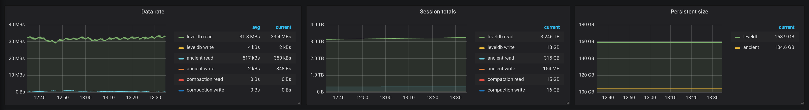

Software is never perfect... and rarely doesn't work...
Bug-fixes improve operation, regressions worsen it
Powerful machines push to the left, weaker to the right
Network connectivity and work loads influence everything
Operating an infrastructure is a game of trade-offs
Too generous, it's wasteful; too stringent, it's unstable
Question is, how do you know how close your node is to failure?
Monitoring and metrics
Not a new concept, just a new dimension
Abstract goals of monitoring 😕
Measure anything deemed useful
Aggregate, query and visualize the metrics
Practically, you need to have questions
Anomalies – What is a specific node doing?
Benchmarks – How does version X & Y compare?
Health checks – How do nodes behave across the globe?
Novice – How healthy is a system and at what cost?
Every metric tells a story... but we need to go deeper
Intermediate – What is the system doing with its resources? (Net)
Transaction propagation at 1.1MB/s ⇒ New propagation algoSynchronization data serving at 1.3MB/s ⇒ New seed node mechanism
Intermediate – What is the system doing with its resources? (CPU)
CPU load comes up in curious places
Block processing is a whole can of worms
Transaction validation and propagation is surprising
RPC calls are unpredictable, network handshake unexpected
Intermediate – What is the system doing with its resources? (Disk)

This doesn't look like much...
Accurate disk I/O measurement is notoriously hard
Executed I/O depends on RAM and fsync ⇒ can't measure the hw
Virtualization and containers mess counters ⇒ can't measure the host
Libraries cover up hidden and background costs ⇒ can't measure the node
We added our disk monitoring *into* LevelDB itself! Can't split by data type though.
Advanced – Why is the system doing something in particular?
Maybe ~1/3rd of the light server charts...Sisyphean task: Measure the tiniest of intricacies of the current algorithms... which might become stale with th first update...
All Star – How does a change influence the system? (Seek PR – Good)
Green was master, yellow was the proposed change
All Star – How does a change influence the system? (File size PR – Bad)
Blue was master, purple was the proposed change* Dashboard is messy as it was flattened into a single screen for PR posterity
All Star – How does a change influence the system? (Trie – Tradeoff)
Most performance decisions are hard
Benefits are generally not spectacular
Improvements in an area degrade others
Sometimes degrading certain things is necessary 😞
Close-up of the Shanghai DoS attacksZoomed out view of the same code across a full import
Monitoring infrastructure
Enterprise QoS or self-hosted OSS? ¹
Datadog – Monitoring as a service
Grafana – On-premise monitoring
Time series database for Grafana? ¹
Prometheus – Pull model
InfluxDB – Push model
¹ Geth supports all combos! ExpVar and Prometheus scraping (--metrics) + InfluxDB pushing (--metrics.influxdb)² Our own current Grafana & InfluxDB dashboards:
Single Geth |
Multi Geth |
Dual Geth
Lessons learned
Measure as low as you can
Every abstraction transforms data and often adds out-of-band processing. Accurate numbers for all code paths need counting at the bottom. The hard part is correlating the measurements back to high level actions.
Measure your worst-case numbers
The OS is magical and optimizes your faults away (e.g. dedup disk i/o). However, it's not a silver bullet. If you reach its limit (e.g. memory full), it will blow up all at once!
Measure everything that you can afford to
Measurements are not free, rather a gradient between cheap and prohibitive. When issues arise however, you either have enough numbers, or you repeat the problem.
Use the left and right arrow keys or click the left and right
edges of the page to navigate between slides.
(Press 'H' or navigate to hide this message.)


 ¹ Geth supports all combos! ExpVar and Prometheus scraping (
¹ Geth supports all combos! ExpVar and Prometheus scraping (